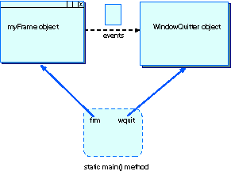

QUESTION 9:

What is the method (part of the listener object) that receives the window closing events?
Is the listener object an object separate from the Frame object?
Yes—in this program. Later on you will see that this need not be so.
|  |
The picture shows how this program is organized.
When the program is running there are two persistant
objects (the frame and the listener)
and occasional event objects.
A channel of communication has been established
between the frame object and its listener object.
The main() method has a reference
variable for each.
main() is a static method,
so it is not part of an object.
What is the method (part of the listener object) that receives the window closing events?